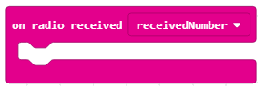

Projektni zadatak – Raspjevane voćke¶
Ton predstavlja pravilno, ravnomjerno treperenje (kretnje) zvučnog izvora.
Ton je zvuk koji ima specifičan:
visina - određuje se brzinom i brojem treperenja u sekundi. Što je veći broj treperenja u sekundi, tonje zvuči više i obrnuto. Ljudsko uho čuje od 16 (najniži ton koji naše uho može odrediti) - 20.000 (najviši ton koji naše uho može odrediti) treperi/sek.
jačina - ovisi o veličini treperenja (amplitude) izvora tona. Što je veća amplituda, glasniji je i ton. Na teren utječe i visina terena. Konkretno, duboki se tonovi čuju znatno manje od visokih.
trajanje - ovisi o tome koliko dugo treperi izvor tona. Kad se smiri, zvuk se zaustavlja.
boja - ovisi o vrsti materijala, obliku i veličini treperećeg izvora zvuka.
Stvorit ćemo glazbeni instrument koristeći Micro:bit za sviranje glazbene ljestvice.
Glazbena ljestvica je niz od osam uzastopnih tonova (sedam tonova različitih imena i osmi ton koji predstavlja ponovljeno ime prvog tona), razvrstanih u oktave. Tonovi na ljestvici mogu se čitati abecednim redom i poljima. Abecedno su tonovi: c (ce), d (de), e (e), f (ef), g (ge), a (a) i h (ha), a prema solfegeu: do (ili ut), re, mi, fa, sol (ili so), la, si (ili ti), do. Micro:bit ćemo koristit za proizvodnju oktave C, D, E, F, G, A, H (B).
Za stvaranje našeg klavira trebate:
4 Micro:bita
slušalice
krokodilke
voćke (8)
aluminijska folija
Da bismo stvorili Klavir (Raspjevane voćke), prvo moramo napraviti fizički uređaj koji se sastoji od voća na kojem ćemo svirati i Micro:bitova.

Povezivanje Micro:bit-a s voćem (voće koje ima puno tekućine) i slušalice:
Korak 1: Prvi Micro:bit povezujemo tako što uzemljenje (GND) povezujemo sa slušalicama pomoću igle (GND) pomoću krokodilki. Na slici ispod prikazana je veza između uzemljenja i Micro:bit-a (samo za jedan uređaj). GND je uzemljenje koje štiti Micro:bit od strujnog udara. Povezujemo se žicom koja će igrati ulogu uzemljenja. Pored toga, potrebno je spojiti Micro:bit i slušalice putem PIN0. Krokodilke povezujemo s PIN0 i priključkom za slušalice (na vrhu). Važno je da se ne dodiruju veze na ulazu za slušalice.
{kind=link}
Korak 2: Drugi Micro:bit spajajte krokodilke u GND i žicu te ga povežite s bananom (umetnite kraj kokodilke u bananu). Spojite Micro:bit s tri naranče na PIN0, PIN1 i PIN2 putem krokodilke.
Korak 3: Za treći Micro:bit, spojite krokodilke u GND i žicu. Mi povezujemo Micro:bit i naranče s PIN0 putem krokodilke. Spojite Micro:bit i dvije naranče s PIN1 i PIN2 putem krokodilke.
Korak 4: Za četvrti Micro:bit spojite krokodilke na GND i žicu. Mi povezujemo Micro:bit i naranče s PIN0 putem krokodilke. Spojite Micro:bit i dvije naranče s PIN1 i PIN2 putem krokodilke.
Sad kad smo napravili fizički glasovir (Singing Fruits), moramo napraviti programe za svaki Micro:bit.

Programiranje
Potrebno je zasebno programirati sve Micro:bit-ove kako bi međusobno komunicirali i proizvodili zvuk.
Korak 1
Idite na https://makecode.microbit.org/.
Korak 2
Napravite novi projekt. Sada želimo programirati Micro:bit-ove za slanje informacija - podudarnih brojeva (za podudaranje tonova) kad se pritisne određeni PIN. Pored toga, moramo programirati Micro:bit-ove za međusobnu komunikaciju. Dakle, ovisno o broju (tonu) koji Micro:bit-ovi “proizvode”, točnije, šalju, Micro:bit prima broj i željeni ton će se reproducirati željeni ton.
Korak 3
Kad želimo uspostaviti komunikaciju (koristiti radijsku komunikaciju) između Micro:bit-ova, svi uključeni Micro:bit-ovi moraju pripadati istoj grupi ili koristiti isti ID grupe. Stvarajući ID grupu, on zapravo stvara prostor u kojem će uređaji komunicirati.
Za izradu ID grupe iz kategorije  uzimamo blok
uzimamo blok  i poslačimo ga u blok
i poslačimo ga u blok  iz kategorije
iz kategorije  . U prostor
. U prostor  unosimo željeni ID grupe. To može biti bilo koji broj. Ostavit ćemo ga da bude 1. Tako smo stvorili grupu s ID 1 u kojoj će komunicirati svi Micro:bit-ovi.
unosimo željeni ID grupe. To može biti bilo koji broj. Ostavit ćemo ga da bude 1. Tako smo stvorili grupu s ID 1 u kojoj će komunicirati svi Micro:bit-ovi.
Dio koda koji stvara komunikacijsku skupinu:

Korak 4
Da biste poslali radio signal na drugi uređaj koji će na toj osnovi “reagirati” tako da se nakon dodira (pritiska) voćke čuje ton, potrebno je dio koda za registriranje događaja(kada se voće dodirne) uvesti blok  .
.
Događaj će se zabilježiti kada se jedan od pinova na Micro:bit pritisne. Da bismo to postigli, uvodimo blok  iz kategorije . S popisa određenog bloka odabiremo pin (P0, P1, P2) koji pokreće događaj slanja broja (tona) koji će se prikazati.
iz kategorije . S popisa određenog bloka odabiremo pin (P0, P1, P2) koji pokreće događaj slanja broja (tona) koji će se prikazati.
Mora se utvrditi način predstavljanja (pohranjivanja) vrijednosti željenih tonova (srednji C ili 262, srednji D ili 294, srednji E ili 330, srednji F ili 349, srednji G ili 392, srednji A ili 440, srednji B ili 494). Uz to treba definirati vrijednosti za svaku od gornjih napomena. Rješenje ovog problema je uvođenje varijable.
Varijablu možete shvatiti kao prostor u memoriji računala, sličan kutiji u kojoj su, tijekom izvršavanja programa, pohranjene neke intermedijarne vrijednosti. Varijable imaju svoja imena. Kad želite koristiti vrijednost varijable u programu, dovoljno je navesti njegovo ime.
Da biste stvorili varijablu, u kategoriji Varijable (1) kliknite gumb Izradi varijablu (2) i u polje unesite naziv varijable (3), u našem slučaju Ton. Klikom na gumb OK (4) stvara se varijabla (5).

Vrijednosti varijable Ton kretat će se od 1 do 8.
U slučaju da se pritisne pin P1, za varijablu Ton, postavimo početnu vrijednost na 1, koristeći blok  .
.
Radio signal šaljemo Micro:bit-u pomoću bloka , a u dijelu  povlačimo varijablu
povlačimo varijablu Ton, koju želimo poslati, odnosno dobijemo blok  .
.
Dobivamo blok:

Isti postupak radimo i za pin P2, postavljajući vrijednosti varijable Ton na 2, ako pritisne pin P2.
Izgled koda za tipke klavira (C, D):

Konačni izgled programa koji šalje informacije o tome koje se pinovi pritiskaju (P1 ili P2):

Sljedeći je korak Micro:bit-a primiti informacije (u našem slučaju broj) na osnovu kojih će “odgovoriti” izdajući zvuk.
Da bismo to učinili, povući ćemo blok  iz kategorije Radio. Ovisno o broju (1 ili 2) koji je primio Micro:bit Micro:bit igra željeni ton.
Za to koristimo blok  iz kategorije
iz kategorije  .
.
U polju uvjeti povucite blok  kojim se provjerava je li pin
kojim se provjerava je li pin P1 pritisnut ili ne:

Ako pritisnete pin P1 čut ćete ton C. Za početak reprodukcije tona povucite blok  iz kategorije
iz kategorije  , kojim se reproducira zvuk. U određenom bloku s padajućih popisa biramo ton i dužinu iste:
, kojim se reproducira zvuk. U određenom bloku s padajućih popisa biramo ton i dužinu iste:

Izgled bloka:

U blok dodajemo još jedan uvjet (pritisnut pin P2) klikom na tipku  . Ako je pritisnut pin
. Ako je pritisnut pin P2, reproducirat će se ton D.
Izgled koda:

Napomena: Da bi se zvuk mogao reproducirati Micro:bit mora biti spojen na zvučnike ili slušalice kako slijedi.

Konačni izgled programa C and D tonova:
Jednim klikom na tipku  ili tipku
ili tipku  preuzmite .hex datoteku na svoje računalo. Povlačenjem datoteke na Micro:bit spremna je za rad.
preuzmite .hex datoteku na svoje računalo. Povlačenjem datoteke na Micro:bit spremna je za rad.
Rukom držimo bananu, a drugu ruku koristimo za sviranje po voću.
Na isti način moraju se programirati i preostala dva Micro:bit-a, srednji E ili 330, F ili 349, srednji G ili 392, srednji A ili 440, srednji B ili 494 tona.
Završni kod Micro:bit-a preko kojeg se šalju informacije na koje se pritiskaju pinovi za reprodukciju E, F i G tonova na njemu:
Završni kod programa za Micro:bit-a preko kojeg se šalju informacije na kojima se pritiskuju pinovi za reprodukciju A, H i C tonova:

Nakon toga, trebate dopuniti kod na Micro:bit koji će biti “oglašivač” zvuka:

Nakon što smo povezali sve voćke i prebacili kodove, možemo svirati neku lijepu pjesmu na našem voćnom klaviru.